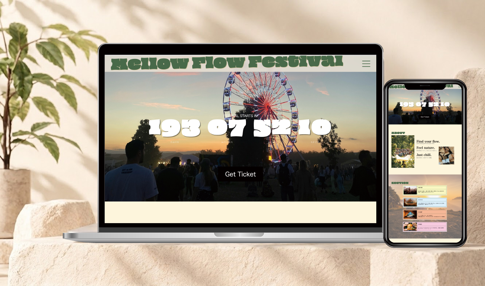
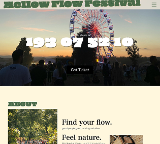
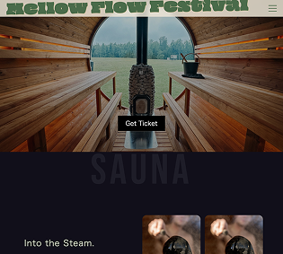
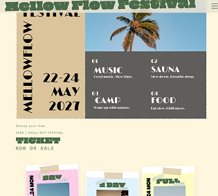
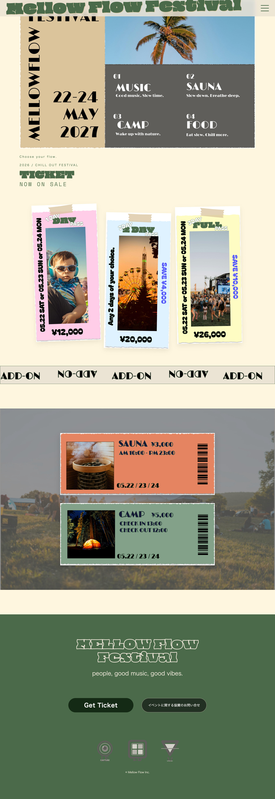

Outdoor Music Festival

音楽と自然が溶け合う、自由な時間。自然の中で音楽やアウトドアカルチャーを楽しむ、架空の野外音楽フェスティバルのWebサイト。https://adjustacademy.com
アウトドアミュージックフェスをテーマにした架空のイベントサイトを制作。
イベントの魅力や開催情報をわかりやすく伝え、認知拡大と来場促進につなげることを目的としました。
01 TOP

02 CONTACT

03 PAGE

カリフォルニアの自然やカルチャーから着想を得て、音楽・キャンプ・サウナを楽しめる アウトドアフェスを表現しました。サンセットをイメージしたオレンジやベージュ、グリーン などのアースカラー基調に、写真を大胆に取り入れることで、自然の開放感や現地の 雰囲気が伝わるデザインを目指しました。
20代〜40代の男女を中心に、音楽フェスやキャンプ、サウナなどのアウトドアカルチャーに 興味があり、休日は自然の中で過ごすことを好む層をターゲットに設定しました。 音楽だけでなく、リフレッシュや非日常の体験を求めるユーザーを想定しています。
タイムテーブルや各ビジュアルを大きく配置し、出演者やイベントの雰囲気が直感的に伝わる 構成にしました。トップページにチケット購入ボタンを設け、購入ページへスムーズに誘導。 詳細ページではチケットの種類をビジュアルで紹介し、情報を整理しました。 サウナページでは、メインページと構成や配色に変化をつけ、音楽以外の楽しみ方も伝わるように 設計しました。
オレンジやベージュ、グリーンを基調に、自然の温かみと開放感を表現しました。 サウナページにはネイビーを採用し、落ち着きのある印象に。ページごとに異なる表現を 持たせながらも、色彩や写真のトーンを統一することで、サイト全体の一貫性を意識しました。
